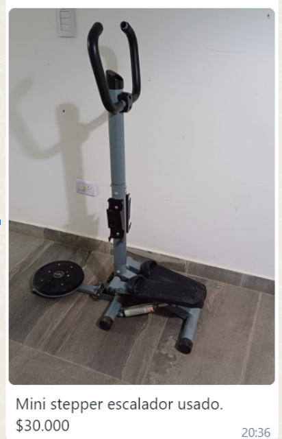
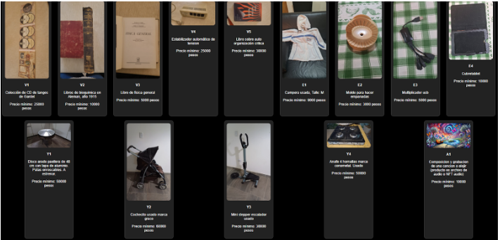
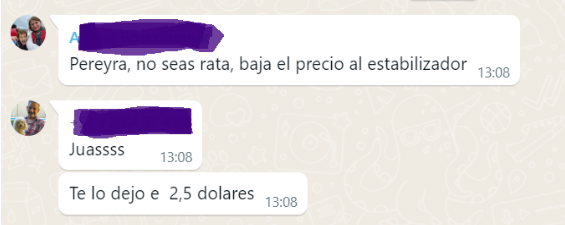
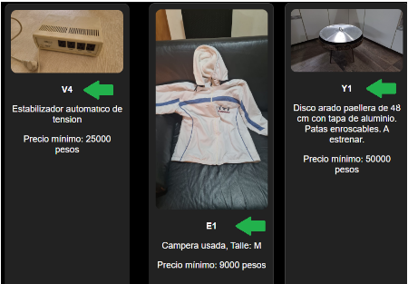
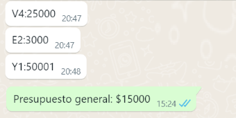
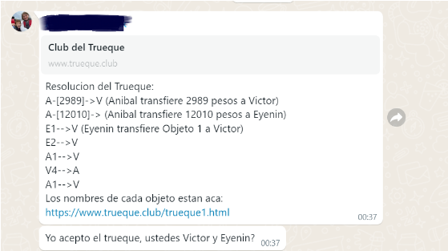

El objetivo de este grupo es realizar intercambios multi-recíprocos de productos (usados o nuevos) o servicios minimizando el traspaso de dinero. Para ello se usa un algoritmo que define la forma más eficiente de realizar los intercambios.
En la etapa de testeo vamos a hacer una Fiesta del Trueque cada semana la cual consiste en 5 pasos simples que se detallan más abajo. La fiesta es en San Luis pero otros afuera pueden participar si las cosas que ofrecen son virtuales. Para participar del trueque en primer lugar tenés que subir fotos de tus productos/servicios al grupo de WhatsApp e incluir su precio mínimo. Después tenés que entrar a un sitio web y fijarte si hay algún producto que quieras adquirir. Si encontrás alguno avisás en el grupo de WhatsApp e incluís qué producto te interesa y cuánto dinero estás dispuesto a pagar por él. Después la inteligencia artificial hace lo suyo y crea una propuesta de trueque que se publica en el grupo. Si todos los involucrados están de acuerdo y se confirma el trueque se busca una fecha y un lugar para realizar los intercambios cerveza de por medio (Aníbal paga y canta en vivo por Meet).
Las sesiones de intercambio se realizan semanalmente y hay fechas límites para llevar a cabo cada paso. A continuación aparece información detallada sobre cada uno de los pasos a seguir.
Subí al grupo las fotos o videos de los objetos o servicios que deseás intercambiar con el precio mínimo que querés recibir por ellos.
Aclaraciones: Es importante que describas claramente el objeto con toda la información que considerás relevante. También hay que tener en cuenta que una vez que incluís los productos en el grupo estos estarán disponibles para realizar trueques hasta que se intercambien o hasta que decidas sacarlos. No es necesario volver a subirlos para un nuevo intercambio (semana siguiente por ejemplo) y si cambias de opinión en cuanto a su venta es importante que avises antes del martes, día en el que se realizan las ofertas.
Entrá a este sitio web y buscá un producto que quieras adquirir.
Si encontrás un producto que te interesa en cualquier momento, contactate con el vendedor en el grupo de WhatsApp y aclarar todas tus dudas sobre el mismo o pedir alguna rebaja.
Incluí una oferta para cada producto que te interesa.
Incluí un presupuesto general para el intercambio (dinero que estás dispuesto a gastar).
 Aclaraciones:
Se ejecuta el algoritmo y se genera una Propuesta de Trueque.
Aclaraciones: Solo intervienen los usuarios y productos que hayan recibido o realizado ofertas.
Aceptación o rechazo del trueque (declara en WhatsApp).
Aclaraciones: Una vez que se acepta el trueque no se pueden realizar modificaciones ya que implica alterar todo el proceso de intercambio y afecta a todos los involucrados en el mismo, de ahí la importancia de aclarar todas tus dudas en el paso 2.
Reunión presencial para realizar el intercambio de productos.
Resumen (todo pasa en WhatsApp):
En cualquier momento se pueden hacer preguntas sobre los objetos y servicios (pero se recomienda entre el Domingo y el Miércoles (antes que el algoritmo proponga el trueque)).